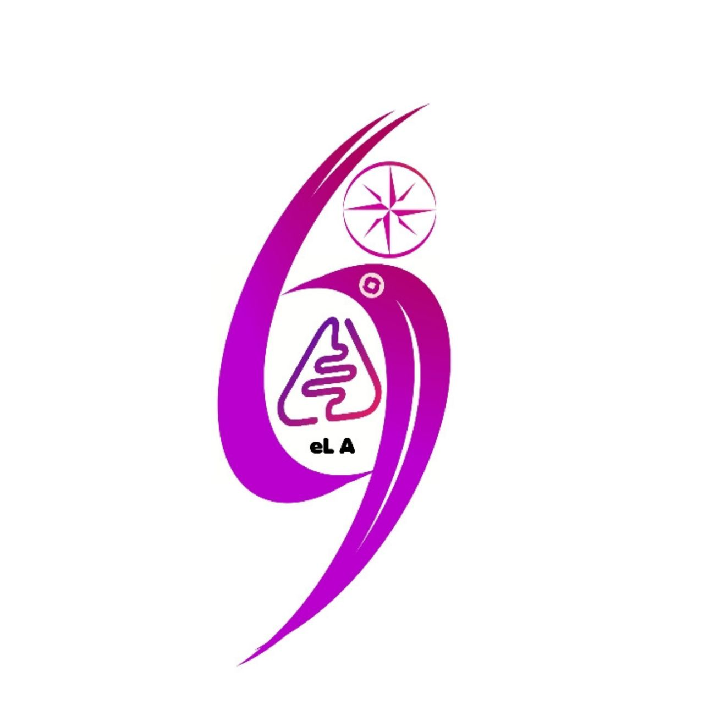
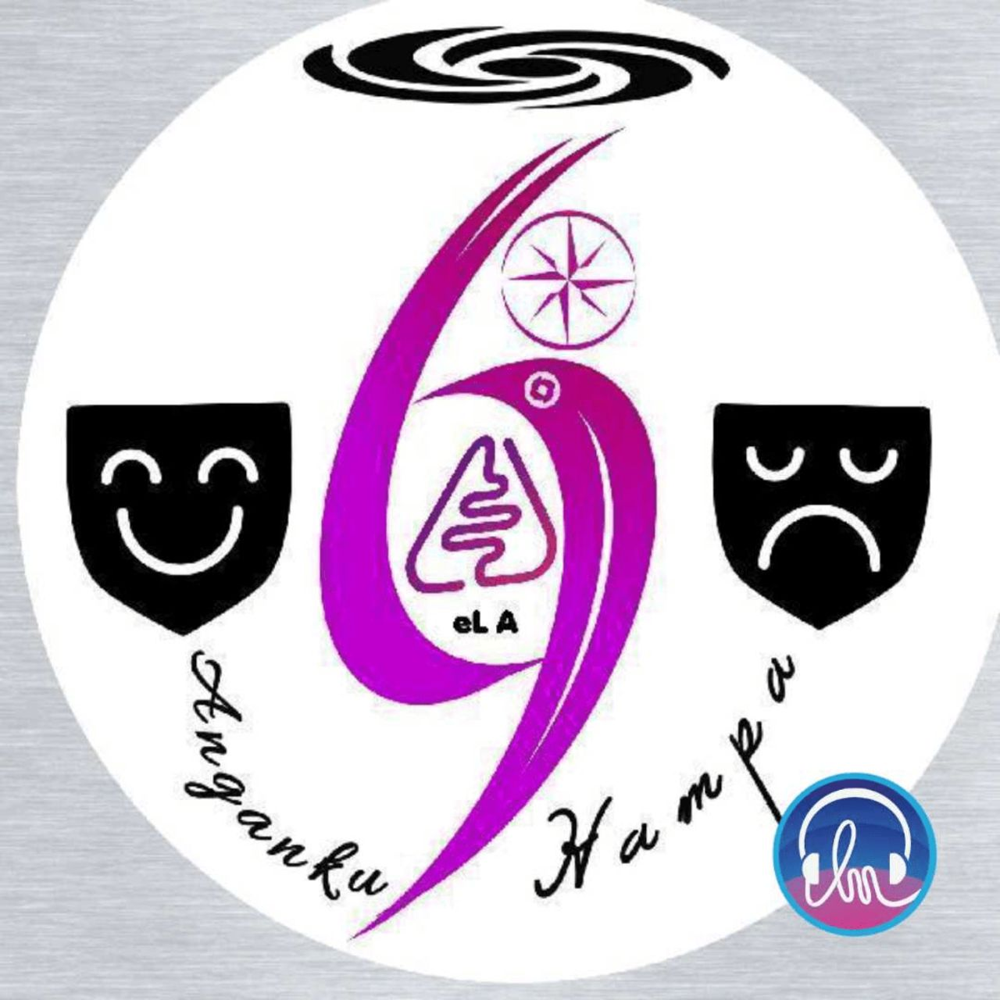
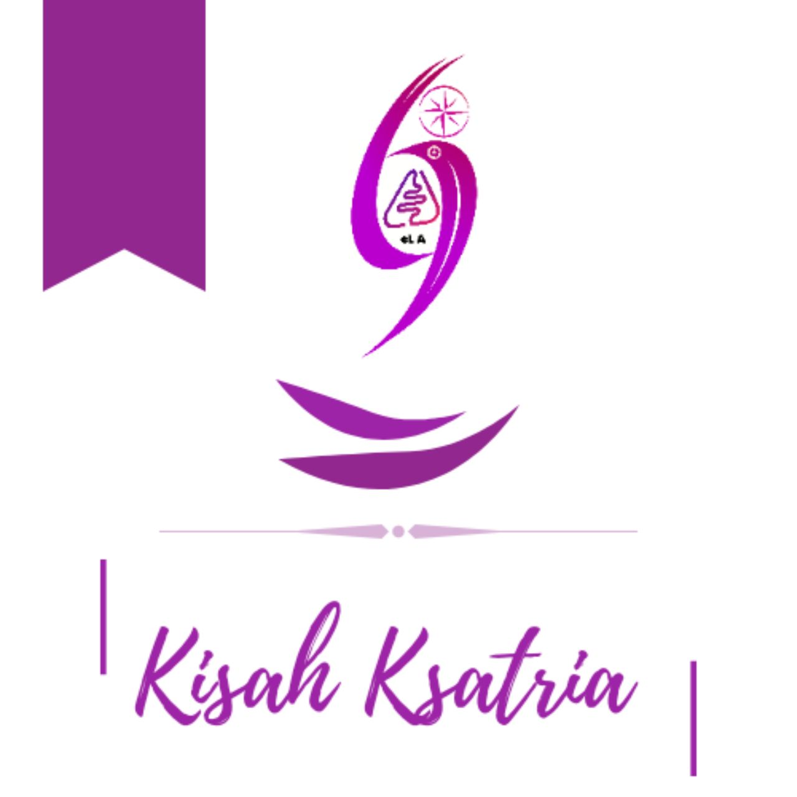
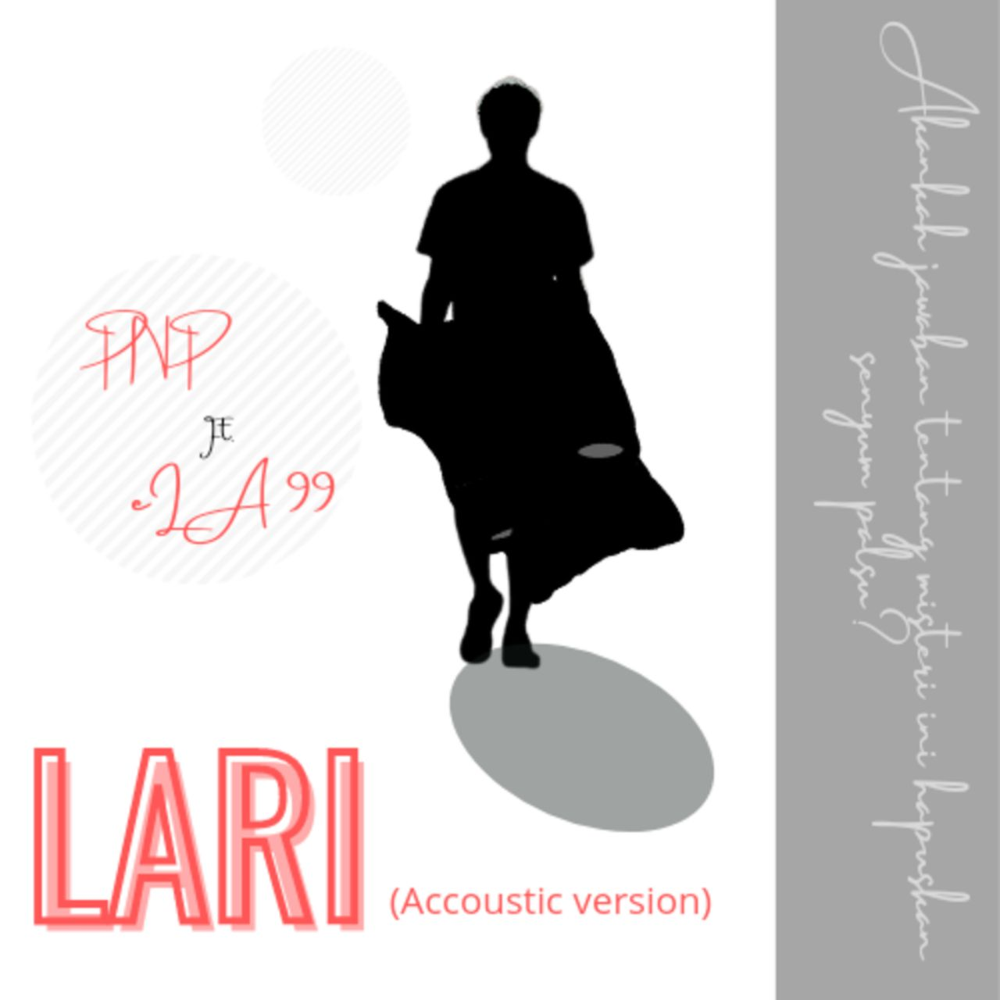
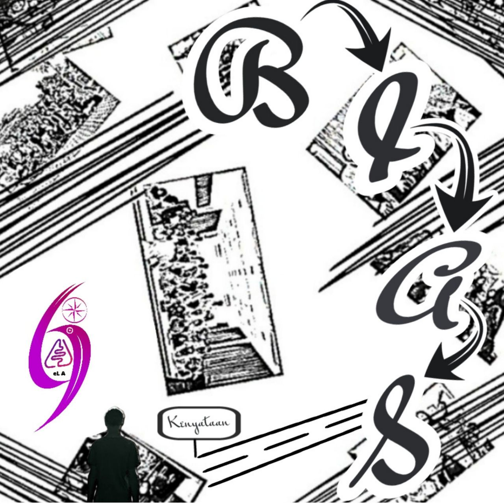
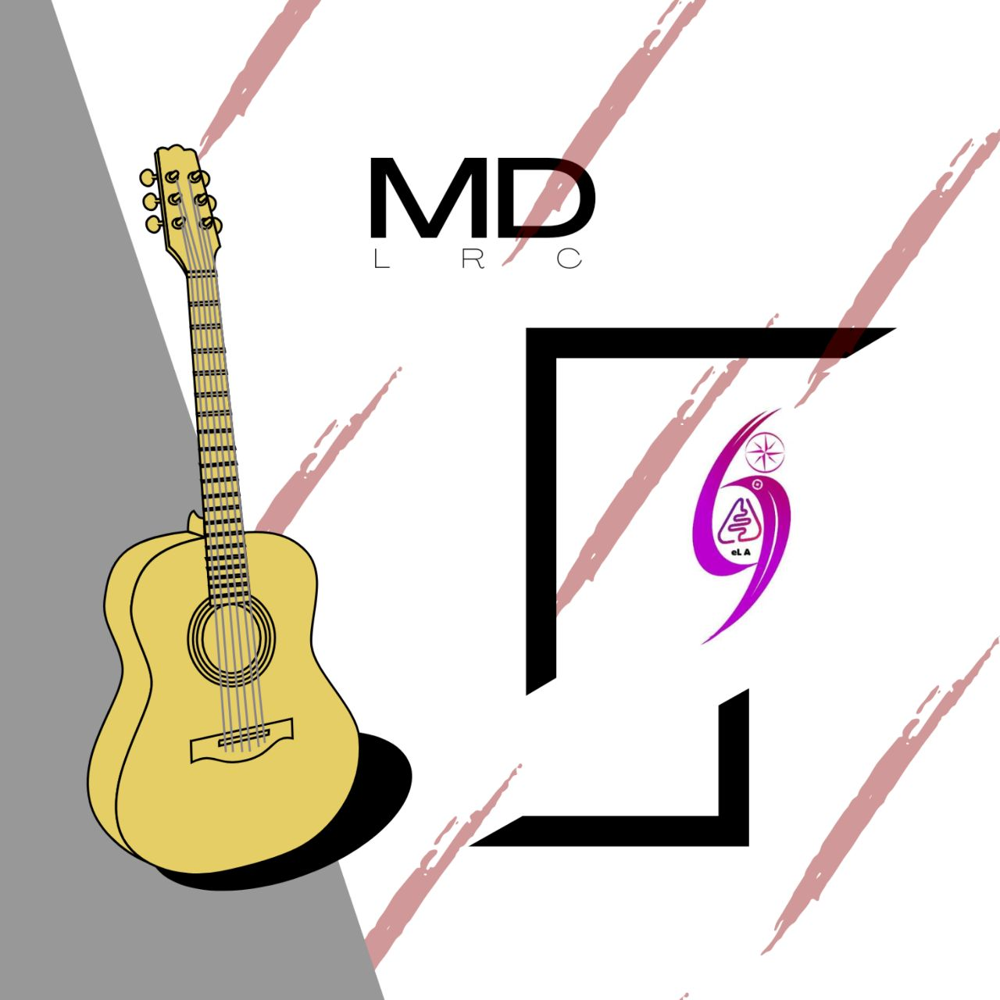

Awal Mula
eL A 99 merupakan salah satu dari sekian banyak musisi indie (independen) di Indonesia yang memulai karir pada 2020 lalu. nama eL A 99 sendiri merupakan akronim dari nama asli sang Kreator, Lukito Andriansyah, dengan angka 99 dibelakangnya merujuk pada tahun kelahiran si kreator. Hal unik yang perlu diketahui adalah, bahwa si Kreator sendiri bukanlah orang yang benar-benar berasal dari keluarga pemusik ataupun ahli dalam bidang musik. Yang dilakukannya hanyaah sebatas 'penyalur hasrat' sekaligus melepas penat selama menempuh kuliah di jurusan Fisika Institut Pertanian Bogor.
Ketika Covid-19 melanda pada awal 2020, Ito - panggilannya - memutuskan untuk merevisi ulang semua lagu yang sebelumnya pernah direkamnya. Dan hasilnya adalah keluarnya mini album pertama yang berjudul Anganku Hampa. Sampai saat ini, sudah terdapat 4 mini album dan 1 buah single yang diluncurkan dan dapat didengarkan di platform musik Langit musik. Bhkan untuk mini album yang terakhir, berjudul MD LRC, dapat didengarkan di beberapa platform musik seperti Apple music, Spotify, Deezer, dll.
Logo

Logo eL A 99 tidak memiliki bentuk yang spesial secara desain, akan tetapi secara pemaknaan memiliki makna yang dalam. Sayap burung yang seakan mengisyaratkan 'Ayo!!!' merupakan wujud semangat untuk selalu bergerak serta adanya arah mata angin menggambarkan ideologi yang bebas, bisa bergerak ke mana saja. Meski demikian arah mata angin tersebut dibatasi oleh lingkaran yang berarti kebebasan tersebut tidak boleh sampai keluar dari hal-hal normal/menyimpang. Secara sederhana, bebas tetapi bertanggung jawab.
Album
Sejak memulai perilisan album pada 2020, hingga kini sudah terdapat 4 mini album dan 1 single yang dapat didengar di platfor musik Langit Musik. Masing-masing album memiliki temanya sendiri dan tidak selal soal cinta. Bahkan ada satu mini album yang dominan dengan instrumen. Beberapa lagu andalannya adalah Anganku Hampa, Ksatria Hijau, Ingatlah Kita, dan Lari. Berikut adalah seluruh karya dari eL A 99.
Anganku Hampa

Dirilis pada Juli 2020, mini album ini awalnya direncanakan sebagai single karena memang jumlah tracknya yang hanya 3 buah. Akan tetapi, karena dirasa kurang cocok terkait dominasi tema, maka dijadikanlah sebagai mini album dengan tetap memakai judul yang sama seperti awal ingin dijadikan single, Anganku Hampa. Pengaruh bermusik dalam lagu ini lebih kental dengan nuansa pop indonesia era 1990-an. Lagu 'Semoga Terwujud' merupakan masterpiece dari mini album pertama ini.
Isi Track: Anganku hampa, Semoga Terwujud, dan Tentang Kita.
Kisah Ksatria

Dirilis 2 bulan setelah mini album pertama, ini merupakan sebuah konsep baru danmenjadi konsep awal untuk kedepannya bahwa di setiap album pasti memiliki satu track instrumental. Tema yang diangkat dalam album ini adalah yang paling berwarna dari mini album lainnya. Pengaruh bermusik dalam lagu inipun sudah mulai dipengaruhi oleh musik-musik bergenre japanese pop. Terdapat 7 track lagu dalam mini album ini, dengan lagu andalannya adalah Ksatria Hijau.
Isi Track: Unharmonical Instrument, Asrama, Rindu, Ksatria Hijau, Bersama Mereka, Harapku Kawan (Puisi), dan Harapku Kawan.
Lari

Sebuah Proyek kolaborasi dengan teman kampus, Putri Nurhayati Pertami. Dirilis satu tahun 2 bulan sjak perilisan mini album terakhir. Konsep yang digunakan adalah sebuah Single, karena memang berisikan 3 Track versi lagu Lari. 2 tambahan lagi adalah versi lagu pendek dan lagu akustik. Namun sayang terdapat kesalahan dalam perilisan lagu ini yang membuat 2 Track lagu tidak dapt di dengar di platform musik Langit musik. Secara tema, single ini menggambarkan seseorang yang terpaksa menjalani kehidupannya meski tertekan, sehingga bimbang untuk tetap bertahan atau lari dari tanggung jawab.
Isi Track: You (1 Minute Version), Lari (Instrumen Version), Lari, Ingatlah Kita dan Lari (Instrument Slow Version).
Bias

Dirilis 5 bulan setelah kegagalan Single Lari, ini merupakan konsep mini Album remake karena beberapa lagu yang ada adalah hasil remake dari sebelumnya dengan menambahkan beberapa instrumen. Termasuk di dalamnya adalah single 'Lari' yang sebelumnya tidak dapatdidengarkan di platform musik Langit musik. Dalam album ini, judul lagu 'Lari' diubah menjadi 'Lari Saja'. Sesuai dengan nama albumnya, tema dari album ini adalah 'abu-abu' atau bias, tidak bisa ditentukan karena memang sangat acak. Lagu andalan dari Mini Album ini adalah 'Kias' dan juga 'Lari Saja'.
Isi Track: Silent Road (Instrument), Kias, Lari Saja, Bersama Mereka, dan Ingatlah Kita.
MD LRC

Dirilis 3 bulan setelah mini album Bias, merupakan anti-thesis dari album-album sebelumnya karena berisikan full instrument. Bisa dikatakan, ini adalah mini album instrument dengan bonus tambahan lagu yang full track. Selain itu, album ini adalah satu-satunya yang bisa didengar selain dari platform Langit Musik karena bisa di dengar di Deezer, Spotify, Apple Music, dll. Hal unik dari lagu ini adalah dimasukannya proyek kolaborasi kembali bersama Putri Nurhayati Pertami dan juga satu rekan baru bernama Sisqina Ummi Sukmawati dalamsebuah grup SLiP untuk lagu Chubby. Merupakan Album yang lagunya paling banyak di dengar jika dibandingkan mini album lainnya.
Isi Track: Masa Baru, Duri, Lari, Rains Fall, Chubby, dan Chubby (Ft. SLiP).